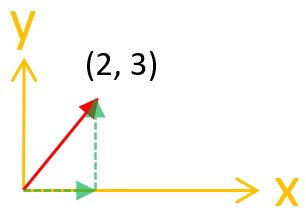
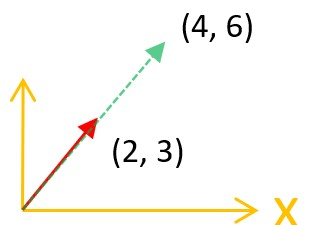
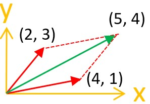
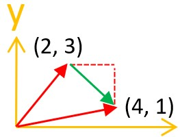
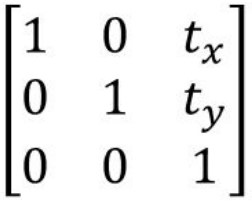
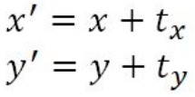
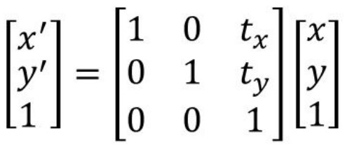
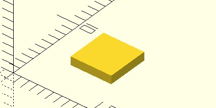

向量與矩陣
February 27, 2022在 2D/3D 幾何運算過程，向量與矩陣是非常強大的工具，OpenSCAD 內建向量與矩陣運算的支援，善加運用的話，程式撰寫起來會簡明許多。
向量運算
向量可以用來表示具有方向與大小的任何東西，例如，座標 (2, 3) 可以看成是 x 座標為 2 像素，y 座標為 3 像素的位置，至今為止的範例也是這麼做的，然而，也可以看成從原點開始，往 x 正方向移動 2 像，往 y 方向移動 3 像素的向量。

OpenSCAD 的 list，可以看成是向量，端看你想表示幾維的向量，例如，[2, 3] 就建立了二維向量，[2, 3, 4] 是三維向量，[2, 3, 4, 5] 等是四維向量，依此類推。
如先前文件中談過的，對於二維向量，索引 0、1 的 元素，也可以用 .x、.y 取得，對於三維向量，索引 0、1、2 的 元素，也可以用 .x、.y、.z 取得，例如：
vt = [1, 2, 3];
echo(vt[0] == vt.x); // ECHO: true
echo(vt[1] == vt.y); // ECHO: true
echo(vt[2] == vt.z); // ECHO: true
OpenSCAD 的 list 可以乘上一個數，這其實就是支援向量乘上純量，可用來進行向量縮放，例如，[2, 3] * 2，結果會是 [4, 6]，也就是將目前的向量放大兩倍：

相同維度的 list 可以彼此加減，這就是在做向量加減，例如，[2, 3] + [4, 1] 結果是向量 [5, 4]，這也相當於從座標 (2, 3) 位移 (4, 1) 來到 (5, 4) 座標：

如果是 [4, 1] - [2, 3] 結果是向量 [2, -2]，也就是下圖綠色向量部份，相當於從座標 (2, 3) 位移 (2, -2) 來到 (4, 1) 座標：

若想求向量，可以透過 norm 函式，它可以求向量的〈Euclidean norm〉，也就是向量各分量平方和後的開根號，norm([4, 1] - [2, 3]) 結果為 2.82843，也就是 (2, 3) 與 (4, 1) 間的距離。
相同維度的 list 可以相乘，這是在做向量〈內積〉，也就是各分量相乘後的和，因此 [2, 3] * [4, 1] 得到一個純量 11。
由於內積等於兩個向量的 Euclidean norm 相乘再乘上 cos(θ)，θ 為兩個向量的夾角，若想求 [2, 3]、[3, 4] 向量的夾角，就是 acos(([2, 3] * [4, 1]) / (norm([2, 3]) * norm([4, 1])))，也就是夾角的角度為 42.2737。
若想求向量〈外積〉，可以使用 cross 函式，對於二維向量 a 與 b，cross(a, b) 結果會是個正值或負值，正表示外積後的垂直單位向量為 +z 方向，負就是 -z 方向，值的大小表示向量的大小，例如 corss([2, 3], [3, 4])，結果會是 -1；對於三維向量 a 與 b，cross(a, b) 結果會是個三維向量。
矩陣運算
OpenSCAD 的 list 可以用來表示矩陣（matrix），例如以下的矩陣：

想以 OpenSCAD 表示的話採取列為主（row-major），也就是實現時逐列編寫，也就是如下看待陣列中的矩陣元素：
[
row1
row2
row3
]
每一列使用一個 list，構成二維的 list：
[
[1, 0, tx],
[0, 1, ty],
[0, 0, 1]
]
這時若使用 * 運算，就是進行〈矩陣乘法〉。例如：
m1 = [
[1, 2],
[3, 4]
];
m2 = [
[5, 6],
[7, 8]
];
echo(m1 * m2); // ECHO: [[19, 22], [43, 50]]
有時一些線性轉換操作，使用矩陣表示會更簡明而有效率，例如，若 tx、ty 分別為 x、y 軸部份的位移量，位移公式可以表示為：

使用矩陣運算表示的話會是：

那麼座標 (5, 10) 在 x 方向移動 3，y 方向移動 5，會到哪個座標呢？
function translated(vt, tx, ty) =
let(
r = [
[1, 0, tx],
[0, 1, ty],
[0, 0, 1]
] * [vt.x, vt.y, 1]
)
[r.x, r.y];
tx = 3;
ty = 5;
echo(translated([5, 10], tx, ty)); // ECHO: [8, 15]
multmatrix 模組
OpenSCAD 提供了 multmatrix 模組，可以指定 4 x 4 線性轉換矩陣以及子模組，它會使用線性轉換矩陣，對子模組的每個頂點進行運算，例如來實現位移：
function m_translate(tx, ty, tz = 0) =
// tx, ty, tz 位移的矩陣運算表示
[
[1, 0, 0, tx],
[0, 1, 0, ty],
[0, 0, 1, ty],
[0, 0, 0, 1]
];
tx = 3;
ty = 5;
multmatrix(m_translate(tx, ty))
square(5);
這會顯示以下的結果：

其實也可以指定一個 4 x 3 線性轉換矩陣，這表示最後一列預設為 [0, 0, 0, 1]，因此上例也可以寫為以下，結果不變：
function m_translate(tx, ty, tz) =
[
[1, 0, 0, tx],
[0, 1, 0, ty],
[0, 0, 1, tz]
];
tx = 3;
ty = 5;
multmatrix(m_translate(tx, ty))
square(5);
透過矩陣運算的好處是，你可以準備好一組矩陣運算結果，再提供給 multmatrix，例如移位、旋轉、鏡像結合運算後的矩陣，再提供給 multmatrix，要留意的是採取後乘（post-post-multiplication）運算，也就是說，若想對模組進行移位、旋轉、鏡像的矩陣分別是 t、r、m，那麼運算時必須是 m * r * t，結果再提供給 multmatrix。
運算好的矩陣可以重複使用，若需要對大量頂點進行相同的轉換時，重用既有的矩陣可以避免重複運算，大大地提高幾何運算時的效率。